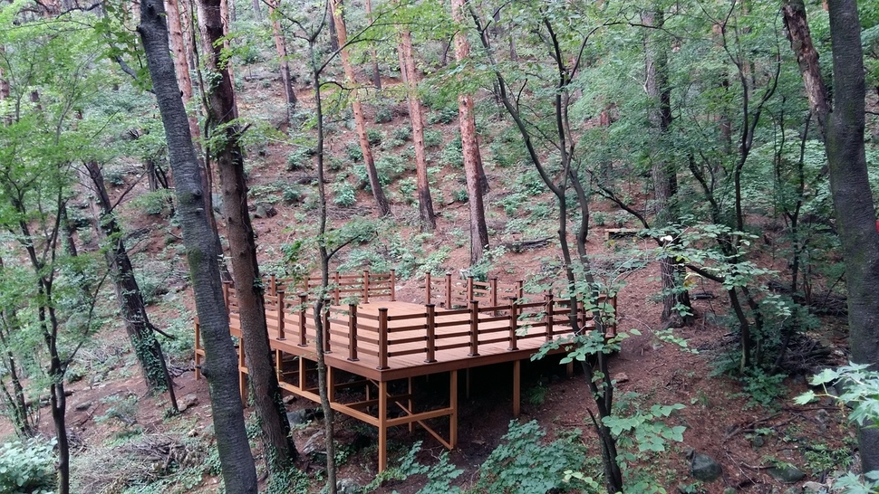
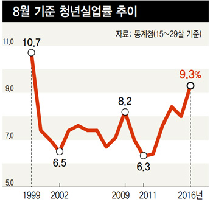
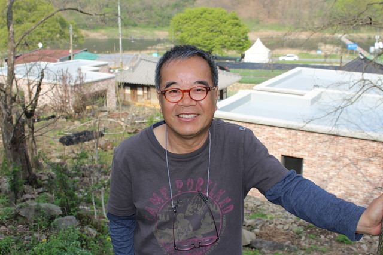
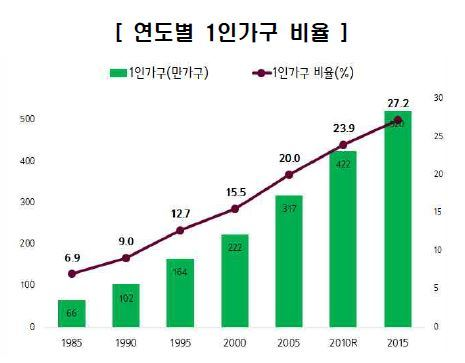

당신이 좋아할 만한 기사
* 빅데이터를 분석해 추천합니다
이태원 살인사건의 결말…패터슨 항소심서도 20년형

추석 스트레스에 ‘파김치’ 됐다면?…숲길에서 ‘힐링’하자!

제조업 취업자 2달째 감소…청년실업률 17년 만에 최고치

20년만에 고향 온 시인이 하는 말 “그냥 살았다”
수명 불평등도 심각, 선-후진국 20년 차이
[단독] 스폰서 부장검사 “너 영장 기각되려면 내 손 풀려 있어야”
한국 노인층의 소득불평등은 더 심각하다
택배 기사가 전하는 ‘김영란법 시대’ 국회 명절 풍경

인구구조 ‘항아리’형으로…1인가구가 가장 많아
드라마속 조정석처럼....남성도 유방암에 걸리냐고요?
Powered by
Dable